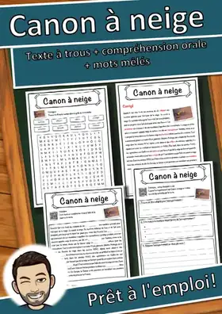
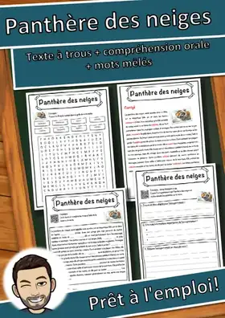
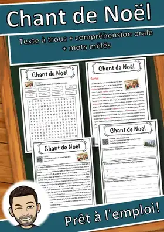
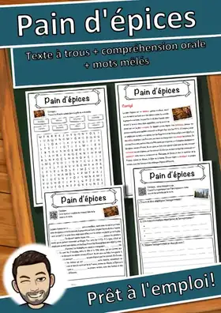
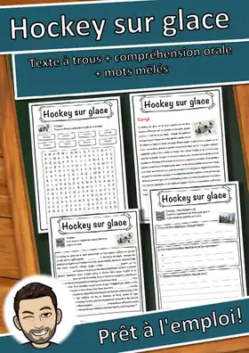
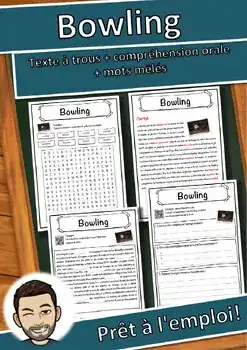
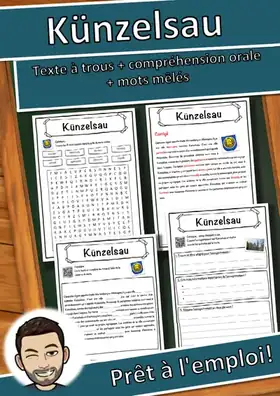

D'un enseignant pour les enseignants
Prêt pour la classe.
En cinq minutes.
Plus de 2.300 fiches en français, prêtes à imprimer et avec corrigé : texte documentaire à trous, compréhension orale par QR code et mots mêlés.
Voir ma boutique sur edukiToutes les ressources
- 2.300+ fiches
- Corrigé inclus
- Sans préparation : imprimer et c'est parti
- CM1, CM2
Sans préparation
PDF à imprimer, utilisable tout de suite. Chaque fiche contient son corrigé : idéal pour l'autonomie, les ateliers ou un remplacement.
Pensé pour la classe
Un langage clair, des consignes pas à pas et des éléments d'autocorrection pour que chaque élève avance seul.
Écouter et lire
Le texte est enregistré : un QR code donne accès à l'audio en français (MP3 gratuit, sans inscription).
Automne
Citrouilles, récoltes, feuilles et fêtes d'automne : des fiches pour les mois d'automne.
Noël et hiver
Noël, neige, sports d'hiver et Nouvel An : des fiches pour la saison froide.

Hockey sur glace – Fiche : texte à trous, compréhension orale et mots mêlés

Canon à neige – Fiche : texte à trous, compréhension orale et mots mêlés
Harfang des neiges – Fiche : texte à trous, compréhension orale et mots mêlés

Panthère des neiges – Fiche : texte à trous, compréhension orale et mots mêlés

Chant de Noël – Fiche : texte à trous, compréhension orale et mots mêlés

Pain d'épices – Fiche : texte à trous, compréhension orale et mots mêlés
Sport d'hiver – Fiche : texte à trous, compréhension orale et mots mêlés

Hockey sur glace - Fiche - texte à trous, compréhension orale et mots mêlés
Nouveautés
Nouvelles ressources
Mes nouvelles fiches apparaissent ici en premier. La liste se met à jour automatiquement.
Fête de la récolte – Texte à trous, compréhension orale et mots mêlés
Castor – Compréhension de lecture : texte à trous, écoute et mots mêlés

Bowling – Compréhension de lecture : texte à trous, écoute et mots mêlés

Rinteln – Fiche : texte à trous, compréhension orale et mots mêlés

Gemünden am Main – Fiche : texte à trous, compréhension orale et mots mêlés

Écosse – Fiche : texte à trous, compréhension orale et mots mêlés

Künzelsau - Fiche - texte à trous, compréhension orale et mots mêlés

Wasserburg am Inn – Fiche : texte à trous, compréhension orale et mots mêlés
Fiches de lecture
Texte documentaire à trous avec banque de mots, compréhension orale par QR code (audio gratuit) et mots mêlés, avec corrigé.
Fête de la récolte – Texte à trous, compréhension orale et mots mêlés
Castor – Compréhension de lecture : texte à trous, écoute et mots mêlés
Bowling – Compréhension de lecture : texte à trous, écoute et mots mêlés
Rinteln – Fiche : texte à trous, compréhension orale et mots mêlés
Gemünden am Main – Fiche : texte à trous, compréhension orale et mots mêlés
Écosse – Fiche : texte à trous, compréhension orale et mots mêlés
Künzelsau - Fiche - texte à trous, compréhension orale et mots mêlés
Wasserburg am Inn – Fiche : texte à trous, compréhension orale et mots mêlés
Par thème
Toutes les fiches d'un domaine sur une seule page.
Par niveau
Choisis un niveau pour voir les fiches adaptées.
Autres langues
Cette page ne montre que des ressources en français. Tu trouveras ici mes ressources en anglais, en espagnol, en italien et en allemand.
Deutsch
Plus de 6.500 ressources en allemand avec corrigé, disponibles sur eduki.
Aller à la page en Deutsch →English
Lectures, rallyes-lecture et ateliers de maths en anglais, disponibles sur TpT. · 3.057 ressources
Aller à la page en English →Español
Lectures et rallyes-lecture en espagnol, disponibles sur TpT. · 1.659 ressources
Aller à la page en Español →Italiano
Fiches en italien avec texte à trous, compréhension orale et mots mêlés, disponibles sur eduki. · 1.260 ressources
Aller à la page en Italiano →Questions fréquentes
Où acheter les fiches ?
Les fiches en français sont vendues dans ma boutique « Snice » sur eduki. Chaque page de ressource contient un bouton qui mène directement au produit.
Pour quel niveau ?
Le niveau indiqué sur eduki figure sur chaque page de ressource. Le texte est écrit dans un langage clair et simple.
Le corrigé est-il inclus ?
Oui, chaque fiche contient son corrigé.
Sous quel format ?
Des fichiers PDF à imprimer, sans préparation.
Existe-t-il des ressources dans d'autres langues ?
Oui : sous « Autres langues », tu trouveras mes ressources en anglais, en espagnol, en italien et en allemand.
D'un enseignant pour les enseignants
Je suis enseignant en Allemagne et je crée mes ressources d'abord pour mes propres élèves. Chaque fiche est vérifiée avant sa publication, pour que tu passes moins de temps à préparer et plus de temps à enseigner.